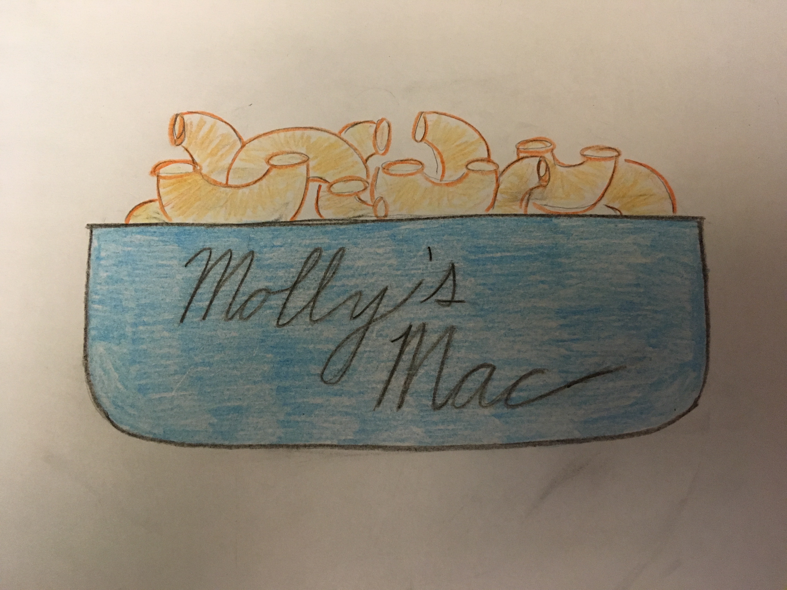

Molly's Mac

At Molly's Mac, we are dedicated to serving the best mac' n cheese in Minneapolis, Minnesota. Our organic cheeses are shipped from local Minnesotan farms as well as our milk. We offer a wide variety of options for both meat lovers and vegetarians alike. We also offer dine in, take out, catering, and delivery options. Molly's Mac is located in Northeast, Minneapolis and just ten minutes from central downtown. So if you love mac' n cheese, a wide variety of choices, or just love cheese, then come and join us for lunch or dinner at Molly's Mac!
1234 St. Anthony Pkwy, Minneapolis, Minnesota, 55418
612-111-7921